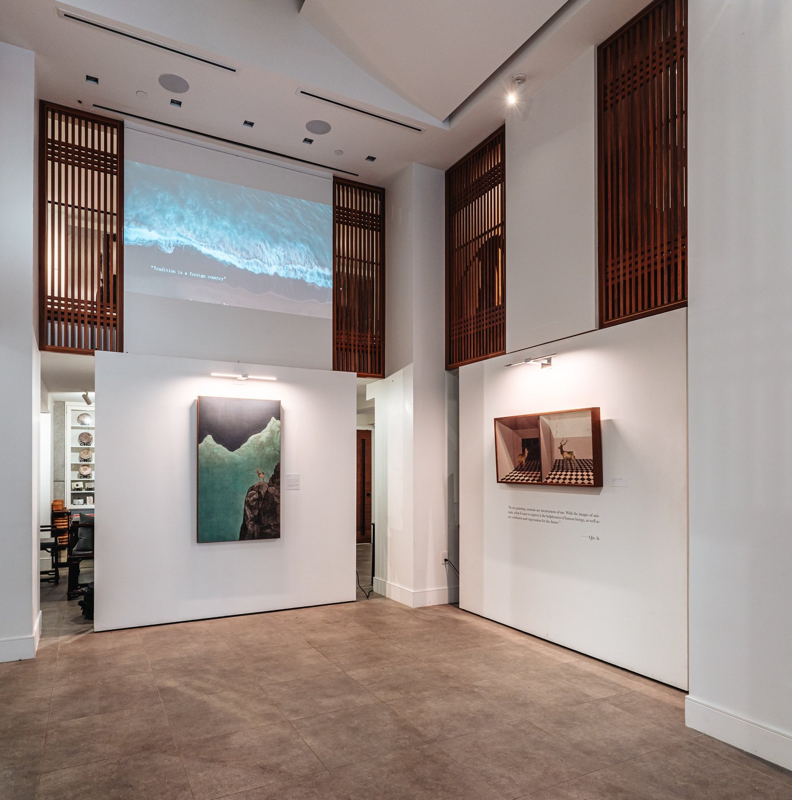
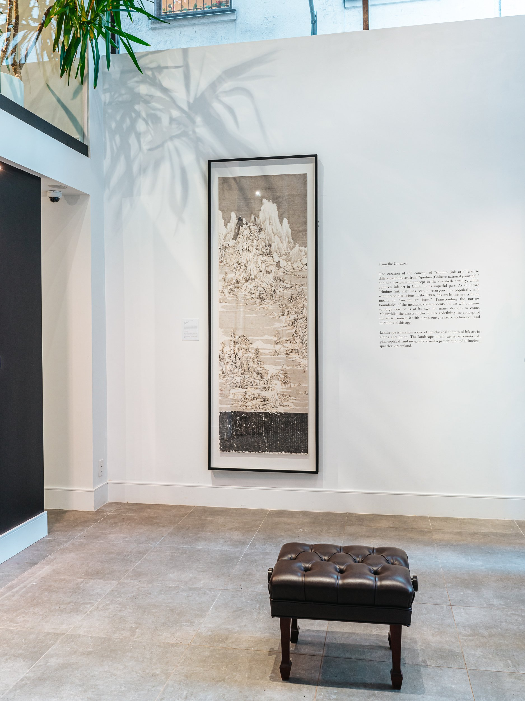
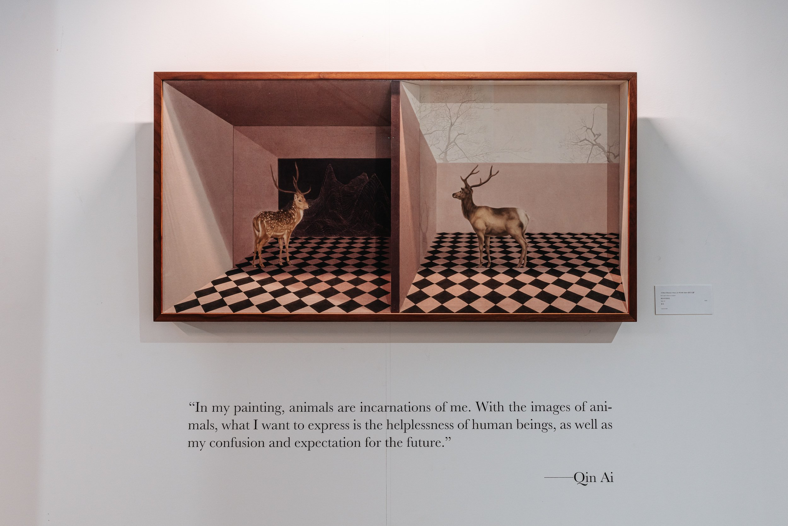
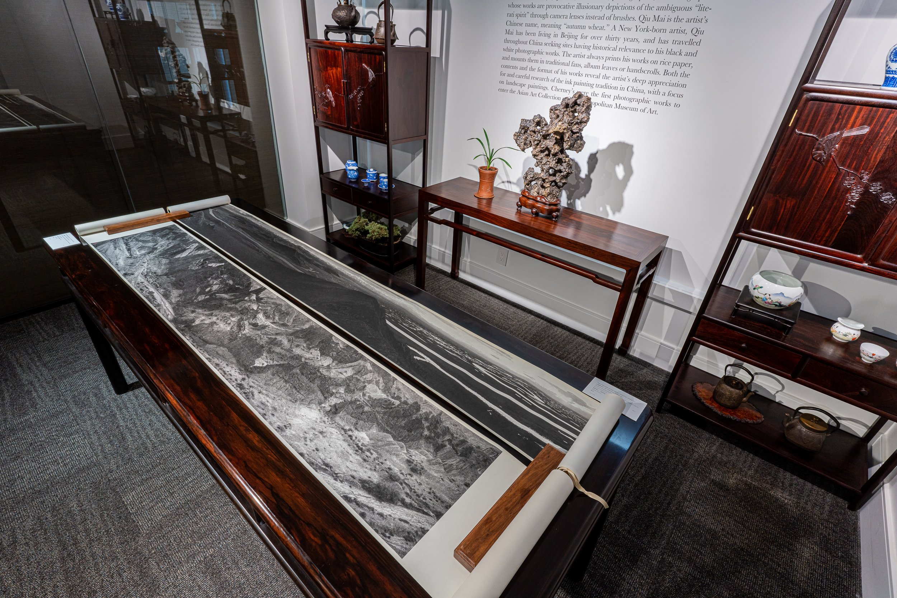
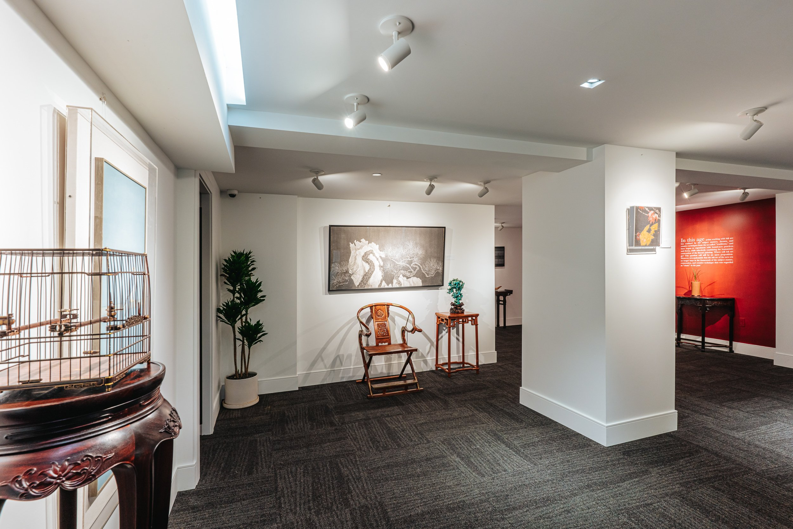
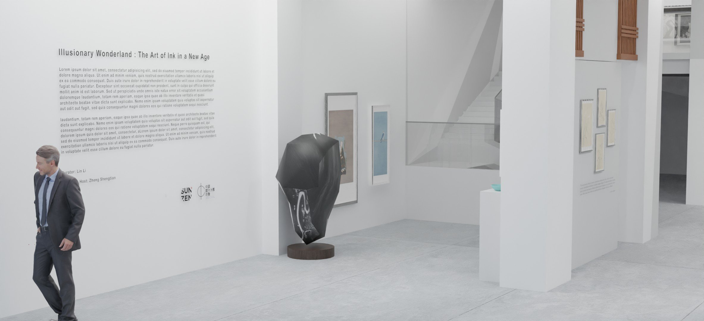
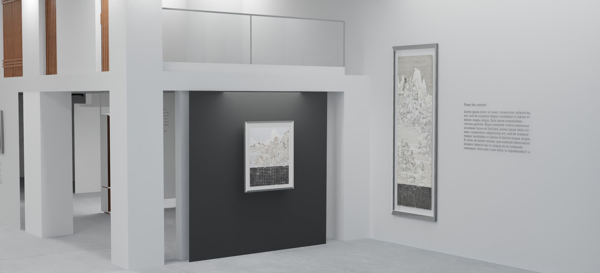
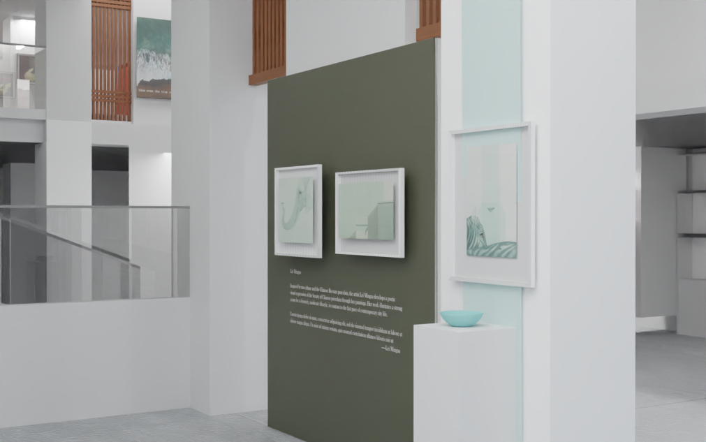
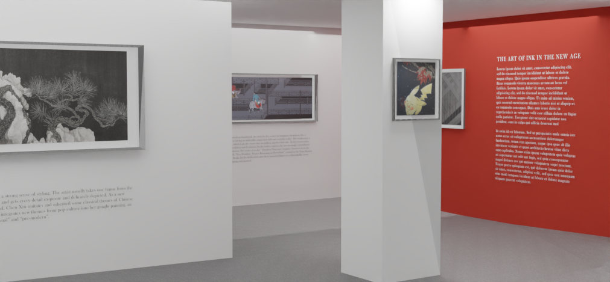
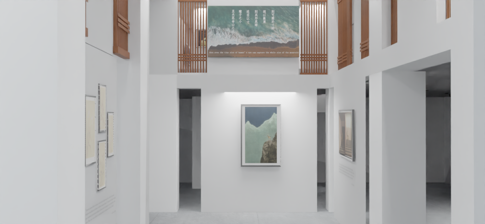

Illusionary Wonderland: Ink Art in a New Age
Featuring approximately twenty works across a range of media by ten artists, the group exhibition Illusionary Wonderland: Ink Art in a New Age examines the continuing metamorphosis of contemporary ink art. In particular, the exhibition explores how participating artists engage with ink both as a medium and as a conceptual source of inspiration, while positioning their practices within an increasingly globalized contemporary art context through diverse themes, subject matter, visual vocabularies, and techniques.
Since the advent of modernity, ink art in its many forms has undergone continual transformation and redefinition. Today, it embodies the cultural, historical, and symbolic aesthetics associated with East Asia. Although ink art remains closely linked to artistic traditions of the East, many contemporary artists who employ ink as either their primary medium or a conceptual reference increasingly seek to reconcile ink practices with modernity, challenging perceptions of the medium as antiquated or obsolete.
At the same time, ink art continues to carry the cultural and historical weight of the East Asian artistic legacy, itself shaped by the rapid modernization of the past century. What distinguishes contemporary ink practices is their ability to destabilize binary oppositions such as East and West, native and non-native, and traditional and non-traditional. Contemporary ink artists consistently test the boundaries of medium, concept, and subject matter, expanding the possibilities of ink beyond conventional definitions. Like an illusionary wonderland, contemporary ink art evokes imagined and reinterpreted visions of the past while simultaneously maintaining a critical dialogue with modernity and contemporary lived experience.
Being Everywhere and Nowhere” features recent sculptures and paintings alongside a site-specific installation. The exhibition also incorporates a curated selection of electronic music, inviting audiences to consider the synesthetic and affective relationship between sound and visual form within Alikov’s practice—what the artist describes as the process of “turning rhythm into shapes.
Artists: CHEN Liang, CHEN Xin, Michael Cherney, GAO Qian, JIN Jin, LEI Mingla, QIN Ai, REN Lihan, SHI Jianmin, WANG Tiande
Academic Advisor: ZHENG Shengtian





Conceptual Design




